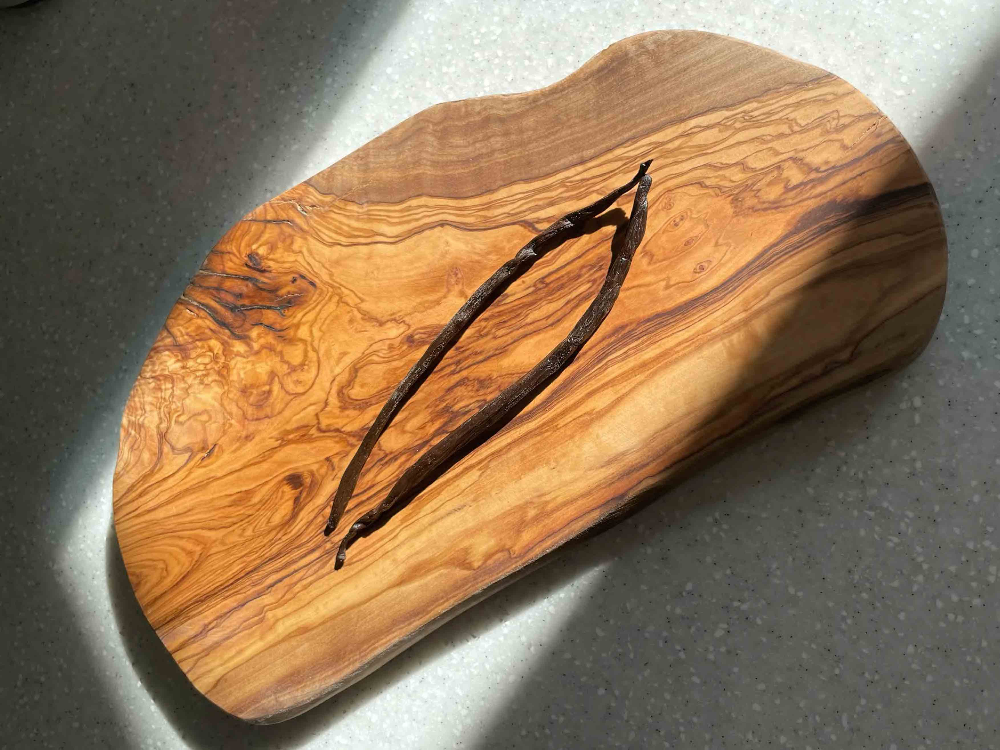

we all want certainty, happiness, and peace.
we want to know that things will be okay. we want difficult feelings to resolve and for happiness to become something reliable enough to hold on to.
but life is more diverse than that. it gives us excitement and exhaustion, love and resentment, beauty and loss, clarity and uncertainty. and your nervous system has the capacity to hold all kinds of emotions. perhaps wellbeing is the development of enough inner openness to meet each experience with congruence and love.
happiness exists when we are feeling it. i think being content means not holding yourself back from real happiness. for me, one of the clearest examples is a beach day. i love contemplating the water, the sky, the smells, and i feel happiest when i can jump into the sea. there is something immediate about that moment. the temperature of the water, the movement of the body, the sensation of entering a different space: i am not trying to remember happiness or predict whether it will last. i am simply experiencing it.
feelings and sensations may be among our most direct forms of contact with life. they are not always comfortable, and they do not always tell us exactly what to do. but they show us that we are here.
when i speak about needing a baseline of neutrality, i mean that neutrality creates space. it allows happiness to arise without immediately clinging to it, and it allows pain to exist without concluding that pain is the whole truth.
can i notice this feeling without immediately judging it?
acceptance also does not mean liking what has happened. in the context of grief, it can mean acknowledging the reality of the loss and beginning to live in a world that has changed.
when my mother died, i lost a part of myself. my life already seemed meaningless and misaligned. i was not in a place where i felt fully connected to myself or to the direction of my life. then everything seemed to move into another dimension.
i remember thinking: everyone has mothers. i do not anymore. it frightened me that there was no clear return to what i had considered normal.
i was standing in a large room with beautiful plants and lots of daylight, in front of a light-brown wooden coffin that i had chosen myself. in that moment, i understood that i could only accept the fact that we would never see each other again.
there was no positive side that could make it bearable immediately. there was only the plain, irreversible reality of it.
grief processing is not linear. sometimes it feels less like moving through a process and more like learning the shape of a new world.
i always felt neglected and that my mother did not give me enough attention and care. after she died, i no longer had anyone to address that feeling to. this was one of the strange contradictions of grief. the relationship had contained love, but it had also contained disappointment. death did not simplify it. it removed the possibility of asking for something different.
we often want to make the dead into uncomplicated figures: entirely good, entirely loving, entirely wise. but real relationships are not uncomplicated. we can love someone and still have been hurt by them. we can feel tenderness beside detachment, gratitude beside resentment.
none of these feelings cancels the others. maybe they are there waiting to get noticed and overtime recycled into something new like everything in the universe.
a full human experience does not require us to edit our relationships into a version that feels more comfortable. it asks us to make room for the whole truth.
i had lived with fear since childhood. it began with the precise moment when i understood that my mother was often sick and older than other mothers. i became afraid of her death. it was my biggest fear, and for many years it poisoned everything around me. every day, there was some version of the question: what if she does not come back from work? what if the painful expression on her face means that she is dying today?
this fear lived in my head for around twenty years. my mother was physically present, but in some way i was already anticipating her absence. she was half-dead to me—not because i loved her less, but because it felt like permanent uncertainty.
when she died, the fear had reached its feared conclusion. it did not mean that i stopped grieving, but the particular fear that had followed me since childhood was dead too. and it felt liberating.
after her death, many unexpected thoughts arose.
i wondered about the thirty seconds before and after death. i wondered whether her brain had replayed memories from her life. i wondered whether she was happy when she saw them, or whether she felt satisfied with what she had achieved.
i do not know what my mother experienced. i do not know whether she was frightened, peaceful, aware, or somewhere beyond any category i can imagine. perhaps this is another part of being human: wanting certainty at the exact point where certainty is impossible.
wacky thoughts are still part of life. back then some were philosophical. some were frightening. some were oddly practical. some felt almost absurd. and i think this is normal because when something fundamental changes, the mind tries to orient itself. it asks questions, revisits memories, creates possibilities, and searches for a way to live beside what has happened.
not every thought needs to be solved. some thoughts can simply be noticed: this is what my mind is producing today. this is what grief feels like in my body. this is the question i cannot answer. this is the happiness i can still feel. that last statement matters. grief did not make happiness impossible. it made happiness more visibly temporary, and perhaps more precious.
a full life includes feelings we welcome and feelings we want to resist. it includes joy, fear, grief, desire, confusion, love, anger, wonder, and calm. it includes the ability to be deeply moved by a beautiful day and deeply changed by a painful loss.
no matter what is happening we get to choose to feel what is here. to let happiness be real when it arrives. to meet pain without judgment. to remain open to the fullness of experience, even when it does not resolve into certainty.
if you’re experiencing overwhelming or persistent grief please seek support from a qualified mental-health professional

cooking with whole vanilla beans